PLS on near-infrared spectra
Predicting a soil's organic carbon from its spectrum: the preprocessing, the number of components, the important variables, the validation, then new samples.
The data are simulated. No soil was measured: the spectra were made by the script spectres.R, with fixed seeds, from known absorption bands (organic matter, clay, water) and measurement defects (scatter, shifts, noise).
The question and the data
Measuring organic carbon in the laboratory is costly; measuring a near-infrared spectrum is cheap. With 120 samples that have both, can we predict the carbon of the next ones from their spectrum alone?
Download soils_spectra.csv (120 samples) and soils_new.csv (20 new ones, without their carbon):
| Column | Content |
|---|---|
| sample | S001 to S120 (N001 to N020 for the new ones) |
| land_use | grassland or cropland |
| soc | the soil's organic carbon, in g/kg (not in the file of new samples) |
| 1100 … 2500 | the absorbance at each wavelength, from 1100 to 2500 nm every 10 nm (141 columns) |
Open the first with File › Open: 120 observations and 143 variables. The columns named by a number are the variables of a spectrum, in the order of the table.
1. The model
Model › New model (Ctrl+N). On the General tab:
- Type: PLS;
- Default scaling: Centring only. Spectra are often centred without scaling: the wavelengths keep their natural weight;
- Spectral preprocessing: 1. SNV, then 2. Detrend (degree-2 polynomial). SNV centres each spectrum and divides it by its standard deviation, which removes the effect of grain size and packing; detrending removes the slope that remains (Barnes et al., 1989);
- Components: automatic (cross-validation), with 7 groups in turn.

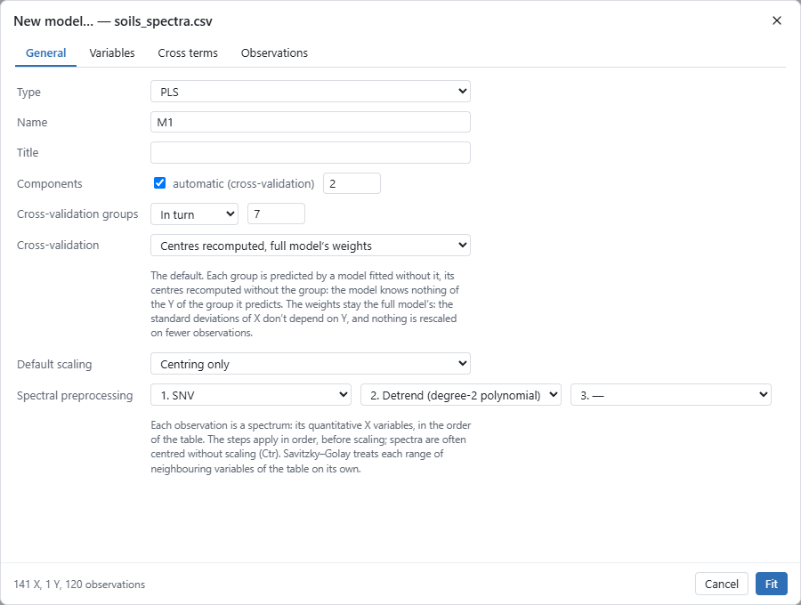

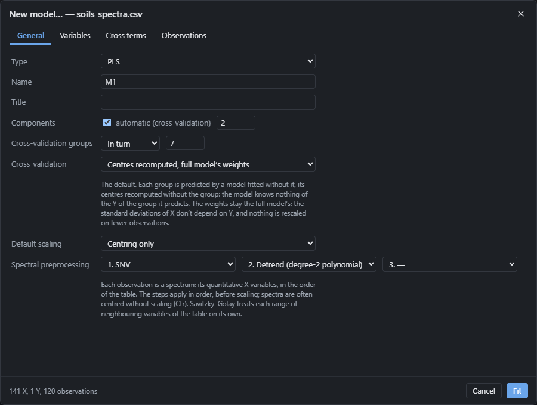
On the Variables tab, the Role… list above the table sets every variable shown at once:
choose X, then give soc the role Y and leave land_use without a role (—).

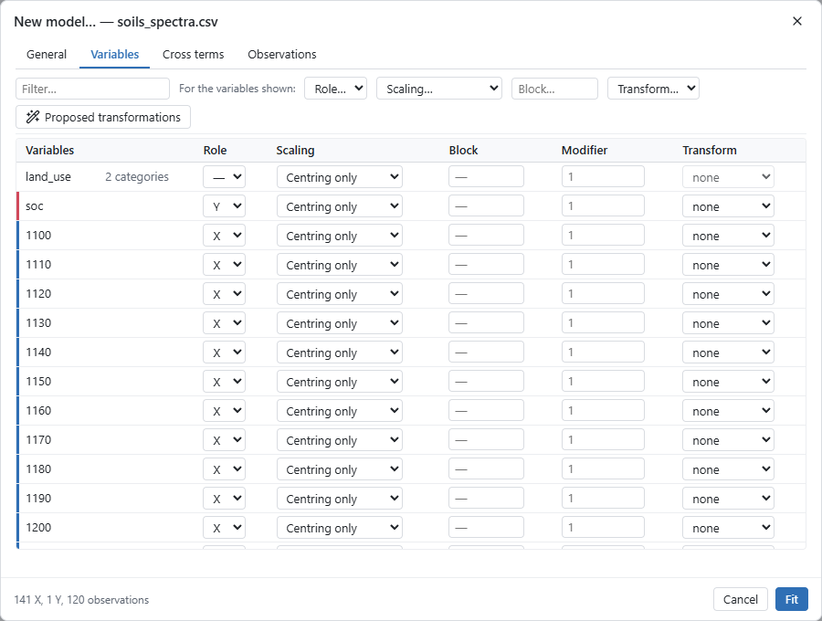

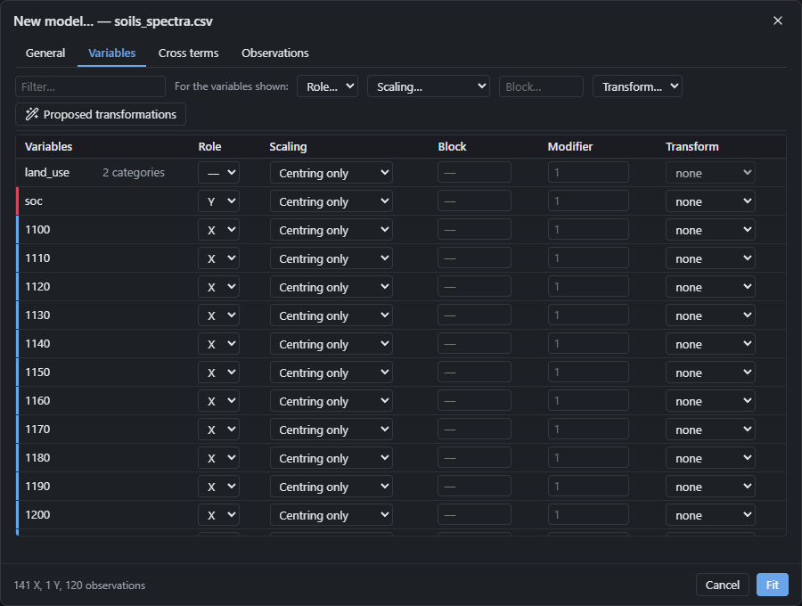
Click Fit.
2. The spectra before and after preprocessing
Plots › Profiles (spectra), Show: Spectra. Tick Before preprocessing to see the spectra as they were read: they are shifted and tilted against each other, and these differences have nothing to do with the carbon.

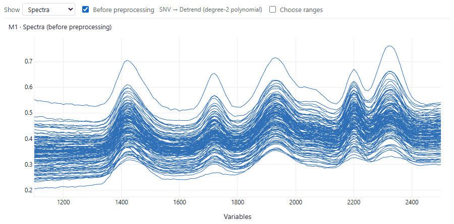

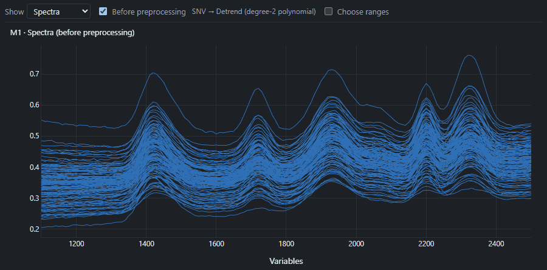

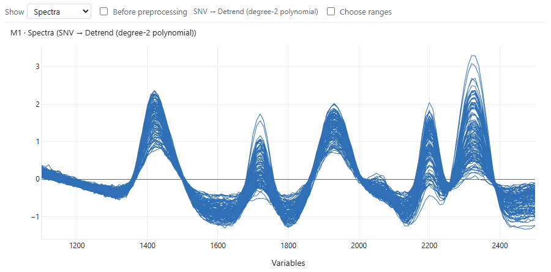

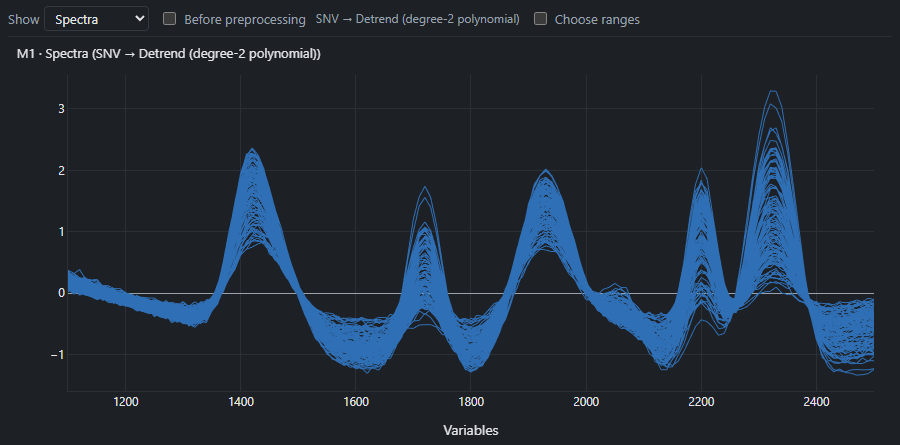
3. The Summary: how many components?

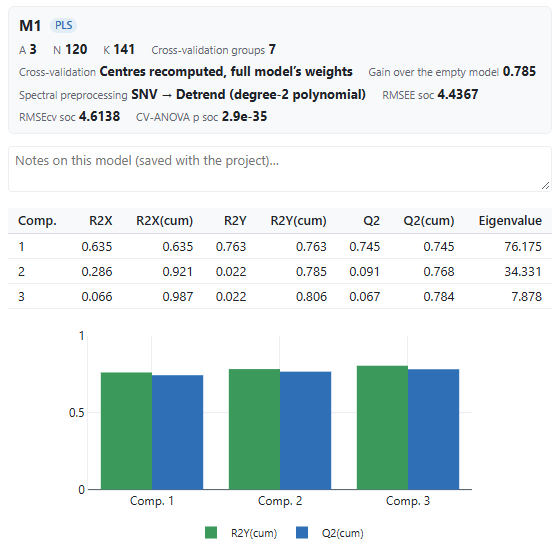

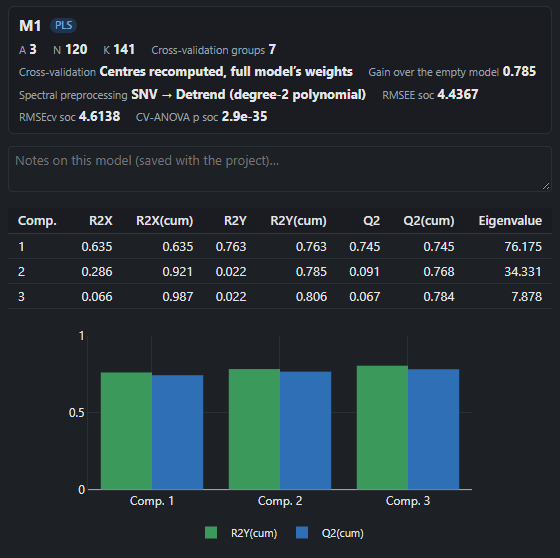
Autofit keeps 3 components: each improves the prediction in cross-validation (the component's Q2 is positive). Together they explain 98.7% of the spectra's variance (R2X) and 80.6% of the carbon's (R2Y). The cumulative Q2, the share of the carbon's variance predicted for samples the model hasn't seen, is 0.78.
In cross-validation, each group of samples is predicted by a model fitted without it: the prediction error (RMSEcv) is 4.6 g/kg, hardly more than the fitting error (RMSEE, 4.4 g/kg). The gain over the empty model (0.78) compares the model with the simplest prediction, the mean carbon. CV-ANOVA gives p < 0.001.
4. The important wavelengths
Plots › Profiles (spectra), Show: VIP. For a spectrum, VIP read better as a line against the wavelength.

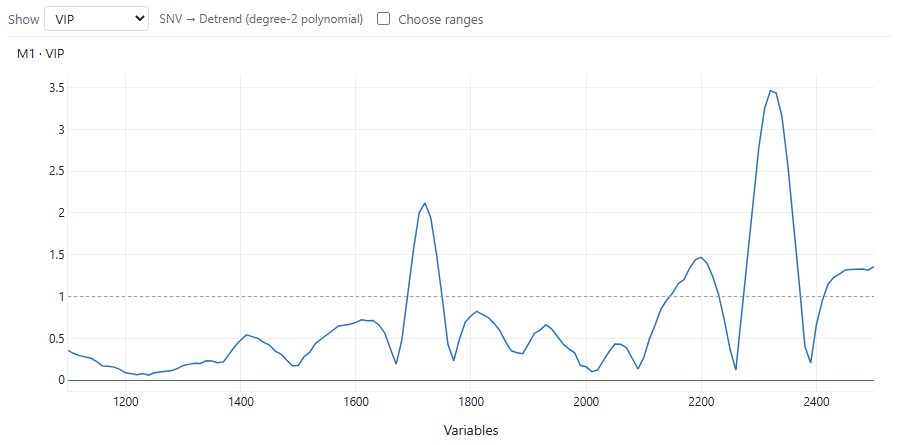

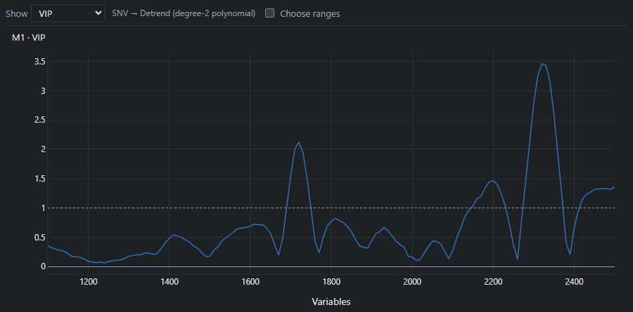
The highest VIP are around 2310 to 2350 nm and 1720 nm, two bands of organic matter (C–H bonds); lower, a clay band near 2200 nm and the end of the spectrum. The model does rely on the carbon's bands. Plots › VIP gives them as bars too, with a cut-off placed automatically; Refit with VIP variables makes the model again with those alone.
5. Observed and predicted
Plots › Observed vs predicted, coloured by land_use:

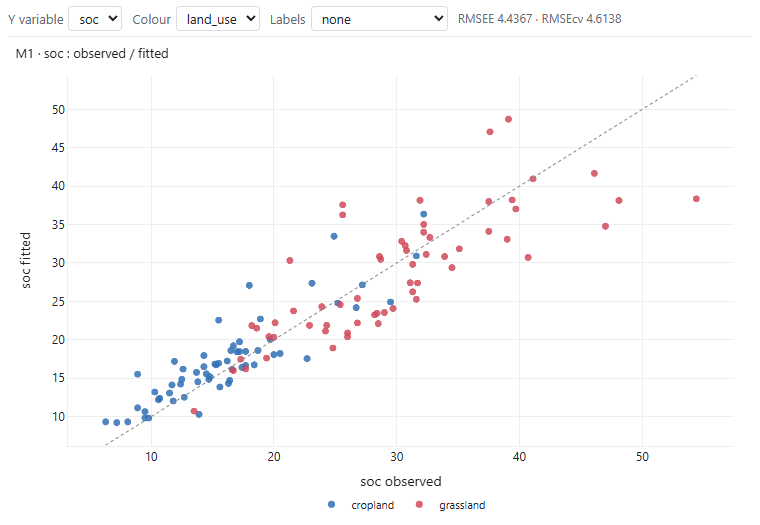

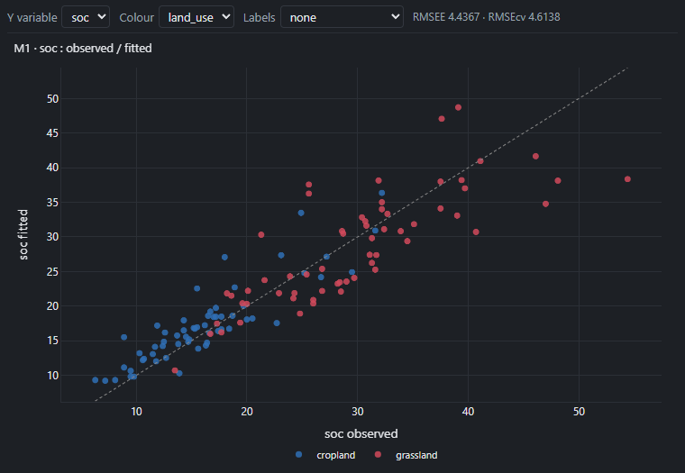
The points follow the diagonal, grasslands at the top, croplands at the bottom. The richest soils (beyond 40 g/kg) are a little underestimated: there are few of them, and the model is linear.
6. The permutation test
A model of 141 variables for 120 observations can fit by chance. Plots › Permutation test
shuffles the values of soc among the samples, refits the whole model, cross-validation included,
and starts again (100 times here, 20 by default).

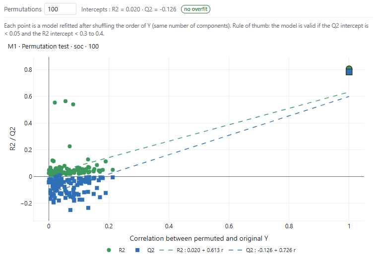

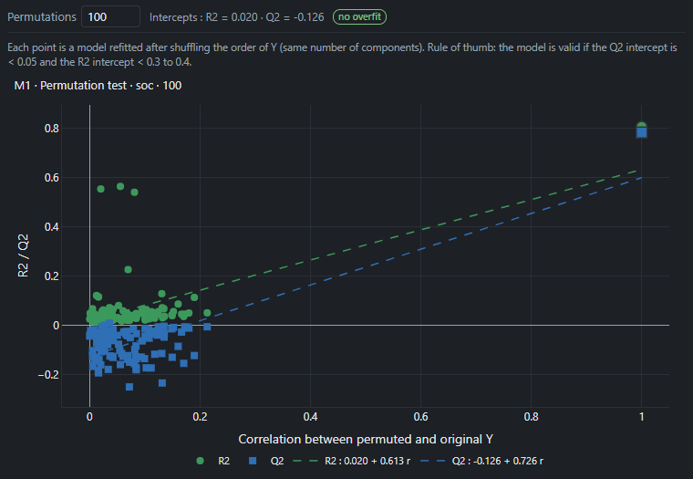
The models on a shuffled carbon have an R2 near 0 and a negative Q2: the lines' intercepts, R2 = 0.02 and Q2 = −0.13, are below the usual thresholds (0.3 to 0.4 for R2, 0.05 for Q2). The model doesn't come from overfitting.
7. Predicting new samples
Predict › Predict a file: choose soils_new.csv. Its columns are matched by their names; each spectrum is preprocessed like the model's, then projected onto its components.

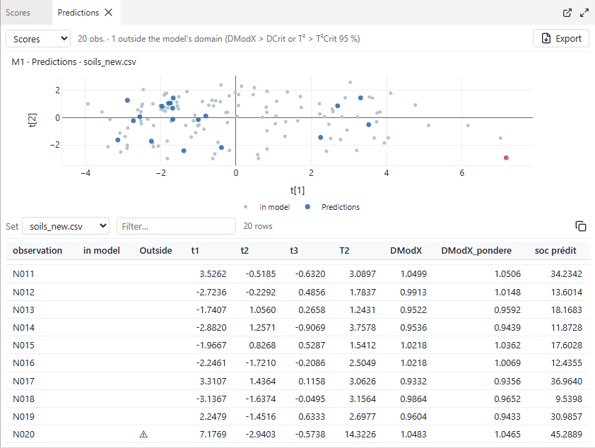

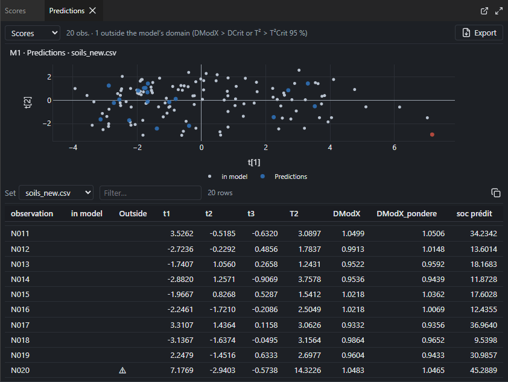
The last column gives each sample's predicted carbon. Nuée also flags those outside the model's domain, far from the calibration samples (T² beyond its 95% limit) or poorly described by the model (DModX beyond DCrit): here N020, far to the right on the scores plot. It is a peat soil, much richer in carbon than any calibration soil: its prediction (45 g/kg) is an extrapolation, and worth nothing. Such a sample is measured in the laboratory, and can then join the calibration. Export writes the table.
8. The Methods text
Model › Text for the Methods section writes, among other things:
Each spectrum (the 141 quantitative X variables, in table order) was first corrected by SNV (Barnes et al., 1989) and detrending (degree-2 polynomial removed; Barnes et al., 1989). The X variables were mean-centred only.
We fitted a PLS regression (partial least squares; Wold et al., 2001) with the NIPALS algorithm, with 3 components. Cross-validation used 7 groups (observation i in group i modulo 7); each group was predicted by a model fitted without it, with centring recomputed on the other observations and the scaling of the full model.
and the Results text gives the most important variables:
The most important variables (VIP > 1): 2320 (3.5), 2330 (3.4), 2310 (3.3), 2340 (3.2), 2300 (2.8), 2350 (2.6), 2290 (2.1), 1720 (2.1), among others.
Going further
- Plots › iPLS (spectrum intervals) fits a PLS on each range of the spectrum and shows which predict best; Choose ranges, in the profiles view, makes a new model without a range (the water bands, for instance).
- A test set (New model › Observations, at random or by Kennard–Stone) keeps samples out of the model and of the cross-validation, then predicts them.
- File › Export to R writes a script that redoes the preprocessing, the NIPALS algorithm, the cross-validation and the plots in R alone, without any package.
- The guide: spectra and their preprocessing, VIP, validation, cross-validation, the test set and prediction.